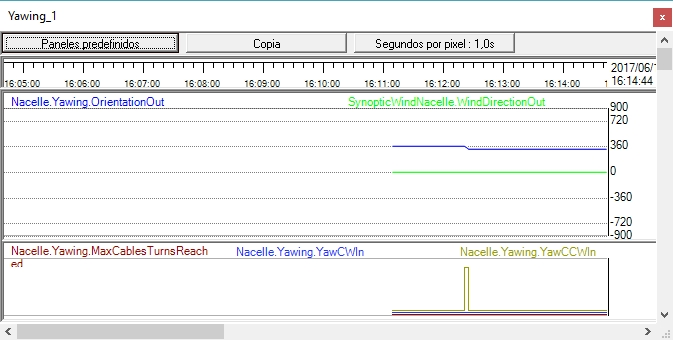

Obiettivo:Per comprendere il controllo manuale dell'orientamento e i suoi limiti operativi.
Cosa osservare:Risposta del sistema ai comandi manuali e agli stati di autorizzazione.
Cosa notare:In quali condizioni il sistema consente o blocca l'azione manuale.
💡 Confronta il comportamento in modalità automatica e manuale.
In questo esercizio pratico, si utilizzerà il "Yaw manuale" pulsanti sul "Terminale di controllo" per comandare manualmente la nacelle per girare. Le frecce su ogni pulsante indicano la direzione di rotazione.

Assicurati di vedere sia il "SynopticWindNacelle" sinottico e registratore con il pannello "Yawing".


Si noti che la nacelle ruota quando si utilizzano i pulsanti "Manual Yaw". Quando uno di questi pulsanti viene premuto, l'indicatore corrispondente in "SynopticWindNacelle" e nel registratore viene mostrato come attivo.
Come esercizio, tenere premuto uno dei pulsanti "Manual Yaw". Controllare che la nacelle smette di girare quando il numero di giri dei cavi di alimentazione raggiunge il limite fisico (3,5 giri). Se questo accade, si vedrà un "Incidente aperto" apparire con la descrizione "Cavi max torsione. Se si preme l'altro pulsante " rotazione manuale", si vedrà che questo incidente cambia a "Recuperato," e che si deve riempire nella casella "Ok" per esso per passare a "Storia dell'incidente."
La velocità di rotazione (in gradi al secondo) è determinata dai parametri "NacelleYawing.CWYawingSpeed" e "NacelleYawing.CCWYawingSpeed. I valori predefiniti, identici in entrambe le direzioni, sono 10 gradi al secondo. In una vera e propria turbina eolica, questa velocità è di circa 0,5 gradi al secondo.